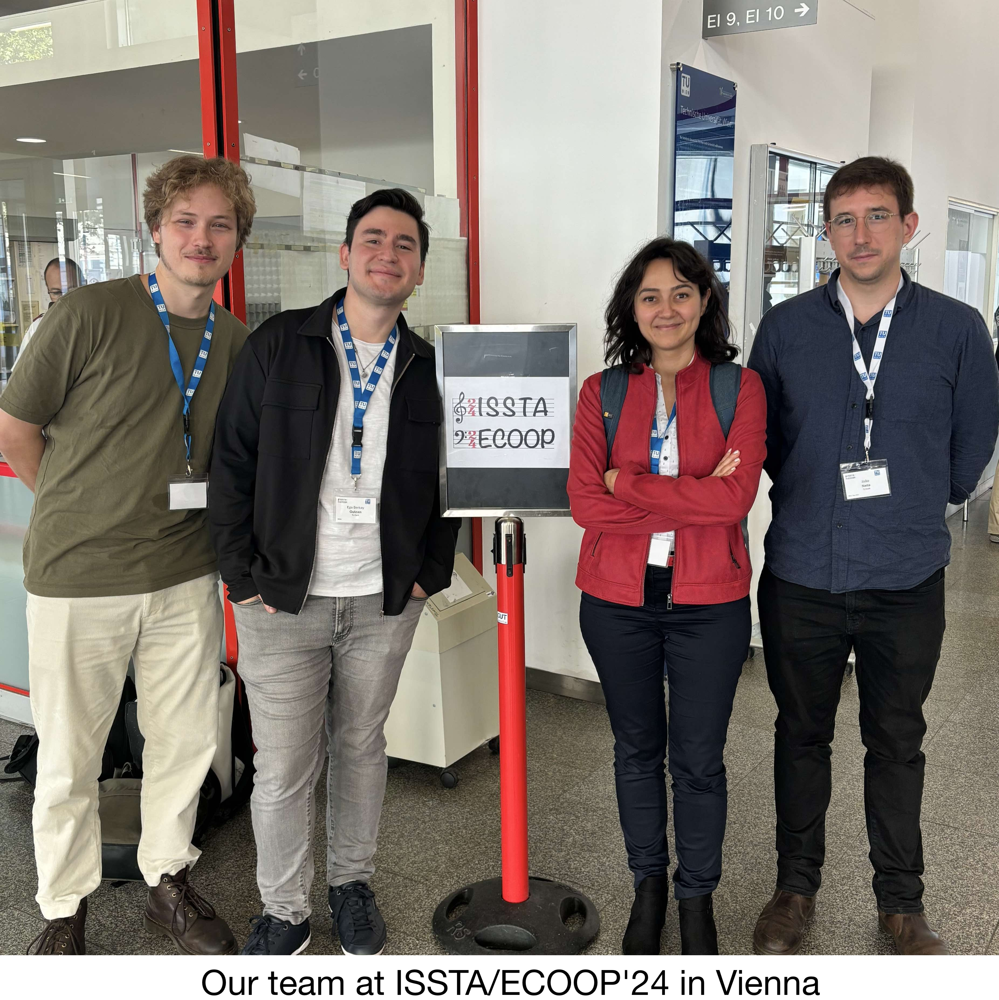

team
Research on Lightweight Formal Methods for Software Engineering, Reliability of Concurrent, Distributed, and Large-scale Software Systems

PhD students
- Ege Berkay Gülcan
- João Neto
- Zahra Seyedghorban (with JetBrains)
- Egor Klimov (with JetBrains)
MSc students
- Delano Filipse (with ASML)
- Davis Kažemaks (with ASML)
Former members
- Bob Brockbernd, MSc, 2024 (with JetBrains) (thesis)
- Mantas Zdanavičius, MSc, 2024 (thesis)
- Junbo Xiong, MSc, 2024 (thesis)
- Luan Li, MSc, 2024 (thesis)
- Melchior Oudemans, MSc, 2024 (thesis)
- Yanzhuo Zhou, MSc, 2023 (thesis)
- Wouter van Lil, MSc, 2023 (thesis)
- Marcus Schutte, MSc, 2023 (thesis)
- Jason Qiu, MSc, 2023 (thesis)
- Nick Dekker, MSc, 2023 (with Adyen) (thesis)
- Mingyu Gao, MSc, 2022 (thesis)
- Martijn van Meerten, MSc, 2022 (thesis)
- Levin Winter, BSc, 2023 (paper, source code contribution)
- Florena Buse, BSc, 2023 (paper)